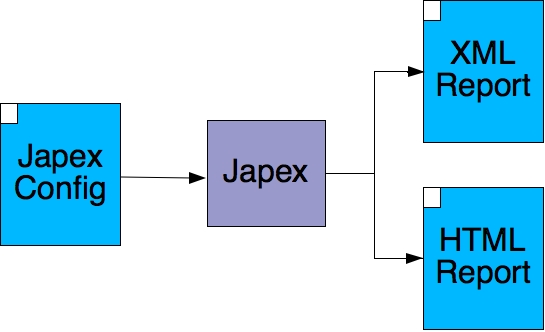

Japex Project |
Welcome to the Japex Project at Java.net.
Profiling is an art, an art that it is very hard to master. Writing micro-benchmarks is one of the many tools available to programmers today. Micro-benchmarks are simple benchmarks that rarely involve complicated deployments and are often used to test specific parts of an application. They are also characterized by the use of wall-clock blocks: start a clock, run the code, stop the clock and report the result.
The lack of common tools for writing micro-benchmarks makes comparing results published by different people impractical. Questions such as "When did you start/stop the clock?" or "What exactly did you include in the wall-clock block?" or "Are you reporting latency or throughput?" often arise.
Japex is a simple yet powerful tool to write Java-based micro-benchmarks. It started as a simple project over a year ago, primarily aimed at testing XML and Fast Infoset performance, but has evolved into a rather sophisticated framework with support for XML and HTML output as well as various types of charts for displaying the results. It is similar in spirit to JUnit in that if factors out most of the repetitive programming logic that is necessary to write micro-benchmarks. This logic includes loading and initializing multiple drivers, warming up the VM, forking multiple threads, timing the inner loop, etc. One of the key design goals for Japex was extensibility. Via the use of a simple model of input and output parameters, it is possible to write micro-benchmarks to test practically anything.
A Japex micro-benchmark comprises of a set of Japex Drivers (i.e., Java classes extending com.sun.japex.JapexDriverBase) and at least one configuration file to describe the drivers under test, the list of test cases and the various parameters used to control the length of the test, the type of output report, etc. You can click on the image below to see an example of each input and output file.
|
|
Running Japex |
|
|
|
 |
|
The type of output chart that is generated as part of the HTML report depends on the type of benchmark and the value of japex.chartType parameter. Click on the images below for an example of the types of charts that are currently supported by Japex.
|
Chart Types Supported by Japex |
||
Downloading:
Documentation:
Licenses: ASL 2.0
Users Mailing List: users@japex.dev.java.net
The Japex code is made available under the terms of the Apache Source License, version 2.0 (ASL 2.0). ASL is a widely accepted and very flexible license; version 2.0 adds explicit terms to cover the conditions for accepting contributions, reflecting experience gathered with the previous versions of the ASL. There is a single copyright owner, Sun Microsystems; multiple copyright owners can lead to very complicated legal situations.
{kind=link}
{kind=link}
{kind=link}
{kind=link}